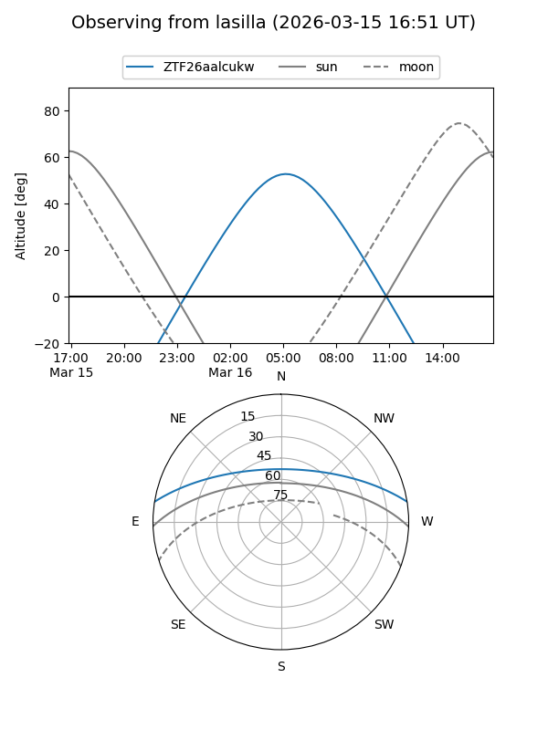
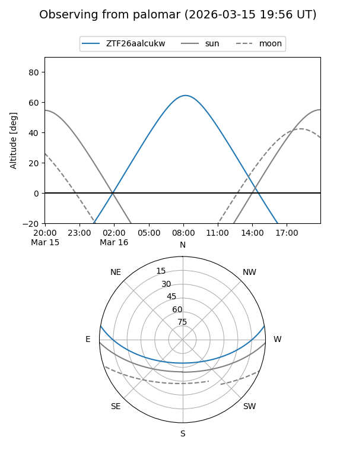

ZTF26aalcukw
Target ZTF26aalcukw at 2026-03-16 07:15
Aliases and brokers:
FINK: link
Lasair: link
ALeRCE: link
alt names
ZTF26aalcukw (ztf,fink_ztf)
Coordinates:
equatorial (ra, dec) = 179.8958,+8.08749
equatorial (HMS+DMS) = 11:59:35.00,+08:05:14.96
galactic (l, b) = (267.7221,+67.34320)
Flags:
Photometry:
last ztfg=18.64
1 ztfg detections
Lightcurve
Visibility


Additional plots